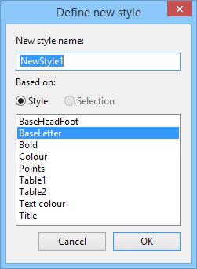
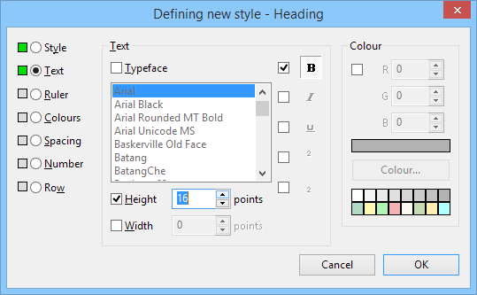
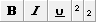
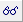

4
Further steps in word processing
This chapter is intended to introduce you to some of Fireworkz' powerful
and advanced features. You should find that they are no harder to use than the
basic features you learned in the last chapter.
Topics covered include:
- Adding new styles and update existing styles;
-
Layering styles to provide a combination of changes,
including colour, emphasis and typeface;
- Using effects to provide one-off changes;
- Using the ruler and markers to update styles;
- Creating and editing tables;
- Resizing columns in tables;
- Adding colour and borders to tables.
The example documents in this chapter were designed to work on A4 paper.
If the printer which you will be using does not print on A4 but a
different length or width of paper, you will need to tell Fireworkz this
before you start.
- Ensure that your printer driver has been installed correctly.
-
Choose
from the
menu.
-
Click the
Read printer button, then click the
OK button.
This process will ensure that the document is formatted correctly for your
printer, using the information stored in your printer driver.
See the chapter in the User Guide on Printing
for further details of setting up your printer driver.
Using the style editor
The style editor is one of Fireworkz' most powerful features. It is well
worth learning to use how to use the style editor to get the best out of the
program. Styles are a powerful tool for formatting your text and documents.
They enable you to tag similar things such as all the headings in your
document, and apply the same typeface, size, and margins and so on to them.
This makes designing your document quicker, because you only have to set up
a style once and then it can be quickly applied to any text. It also
ensures that your documents are consistent, because when you change a style
Fireworkz automatically changes all text which appears in that style.
Before you start to edit styles and create new styles, you should
familiarise yourself with the style editor by looking at some of the styles in
the document you will be working on.
-
Load the example document Newsletter from the
Tutorials directory.
-
Click the
Style button on the toolbar. The
Styles
dialogue box will appear, containing a list of styles.
-
Click the
BaseLetter entry (this is the base style for this document) in the
list to select it and then click the
Change button. The
Editing Style
dialogue box (referred to as the style editor) will appear.
The style editor is divided into a number of
different sections which you can reach by clicking on the radio button next to
their title. The green button next to each radio button simply indicates that
something has been selected in that section of the style editor. They do not do
anything except help you find out what attributes a style has.
The first green button is always on as every style has a name.
You will see that in this case all the green
buttons at the left-hand edge of the style editor are illuminated. This is
because you are editing a base style that provides default values for all
style attributes in this document.
If a style which does not have all the settings
active is applied to a section of text, the text will retain the existing
settings for those attributes which are not set in the style which you are
applying.
-
Click the
Cancel button.
-
Click the
Style button on the toolbar
again, but this time choose
Bold from the list of styles.
You will see that this style
has only one active section,
Text, and that this has only one option, the bold typeface option, set.
The left-hand button of this option indicates
whether the style affects the boldness of the text - in this case the option is
set so the boldness is affected. The right-hand button of this option indicates
what the effect is - in this case the button is in the on position and so text
to which this style is applied would be made bold. (If the right-hand button
had been in the off position, the effect of applying the style would be to
remove any occurrence of bold text which it encountered.
You should spend some time looking at the options in the
Style
dialogue box.
If you do not understand any of the terms used, they are all
defined in the Glossary at the end of the User Guide.
Adding a new style
The newsletter does not have a style for headings. Headings currently
appear in the same style as the main text (referred to as the body text).
To add a new style:
-
Click the
Style button on the toolbar,
then click the
New button. The
Define new style dialogue box will appear:

- Type Heading in the space for the style name.
-
Choose
BaseLetter from the list of styles.
It is usual to base new styles on attributes from an existing one.
-
Click the
OK button.
A new dialogue box will appear with the title
Defining new style - Heading.
-
If necessary, click the
Text button to go to the part of the
Style dialogue box where you can alter
aspects of the text style.
-
You will be making the type bold and increasing its size. So you need to
click on the check box next to the
Bold button. Both it and the
Bold button will be pressed in.
Next, click the
Height check box.
Use the arrows to increase the size to 16 points.

-
Click the
OK button.
The new style, Heading, is now added to the list of styles in this document.
If you click the
Style button on the toolbar
you will see that Heading is now included in the list of styles.
Applying your new style to existing text
There are several headings already in the document to which you need to
apply the Heading style. To do this:
-
Go to the first heading, ‘Latest news from your youth club
and community centre.’, and select it.
-
Click the
Style button on the toolbar.
-
Choose
Heading from the list of styles
and then click the
Apply button. The heading will appear in bold and in larger text.
- Go through the other headings in the document and do the same to them.
Note that the best way to create your document is to enter the text and then
to add the styles to it afterwards, as described above.
You can, if you wish, set up a style to be applied to text which you are
about to enter at the current caret position by choosing a style from the list
and clicking the
Apply button when no text is selected.
Changing styles without using the dialogue box
There are some aspects of style which are much more easily set up or
changed by working on the page with the buttons and ruler markers than by going
through the
Style dialogue box and typing in numbers.
Setting margins and tabs are the main example.
The list of points at the bottom of the page need to be indented (moved
towards the centre of the page) further than they are already. To change the
style:
-
Place the caret in the line beginning ‘Junior disco’. But make sure that
you do not select any text; you can check this by looking at the
Selection button on the toolbar,
which should be white.
-
Point at the left margin marker, and drag it one centimetre to the right.
The paragraph margin marker and tabs will follow it. Note that the status line
will tell you which style you are altering, in this case Points.
All three paragraphs which are in this style will be reformatted.
If you attempt to change a style while there is a selection, your changes
will be applied as an effect to the selected area. An effect is like a one-off
occurrence of a style, but no record of it is stored in the Style list so it
is harder for you to keep control of your document and go back and make
consistent stylistic changes.
Layering styles
One of the most powerful things you can do with styles is to combine them
with each other to add further dimensions of style to your documents.
To make this easy, you should define as little as possible in each style.
For example, styles changing the colour of text should not also change the
typeface or text size. This makes it easy to build combinations of styles,
giving you added flexibility.
You have already applied one style, Heading, to the headings in
the document. Now go back to them and layer another style over them to add
colour.
-
Select a heading and click the
Style button on the toolbar.
-
Choose
Text colour from the list of styles
and click the
Apply button. The text will change to the new colour but remain in the same typeface.
Applying effects
If there is a change in appearance which you wish to make consistently
throughout your document, for example changing all headings to be a
larger size, then you should use a style for this.
However, if there is a change which you know is only going to occur once,
then it will be quicker to make the change by applying an effect.
To apply an effect:
- Selected the area of text you wish to change, in this case the words lighting system in the second paragraph.
-
Click the
Effects button on the toolbar. The
Apply effects dialogue box will appear.
This is like the
Style dialogue box.
-
Click the
Text button, enable the
Colour option and choose any colour
from those available.
-
Click the
OK button. The text selected will
immediately be changed to the colour that you chose.
Like styles, effects created using the
Apply effects dialogue box will be added to
the selected region, if there is one. If there is no region selected, any
attributes which you set will affect any new text which you enter at the
current caret position.
Special effect buttons
Buttons are provided on the toolbar for the most commonly used effects; bold,
italic, underline, superscript and subscript:

As usual, you can select a region and click one of these toolbar buttons to
apply the corresponding effect to that region.
Alternatively, you can click one of these toolbar buttons when no region is
selected to have the effect apply to new text at the current caret position.
The button will appear to be pressed in, to remind you that any text which you
enter will appear in the corresponding style. To revert back to normal type, simply click the toolbar button again to deselect it.
For example, you need to add another text paragraph to the newsletter:
-
Place the caret at the end of the paragraph which starts
‘Thanks to everyone...’ and press
Return↵.
The caret will now be at the start of a new paragraph.
-
Click the
Bold button on the toolbar. You will see that bold is now selected.
-
Type in:
Also thanks
-
Click the
Bold button on the toolbar again. You will see that bold is no longer selected.
-
Type in:
to the Parent and Toddler group for raising £145 with the sponsored tricycle ride.
You will see that the first two words appeared in bold and the rest in the
ordinary base text style.
Adding tables
Tables are a useful way of setting out complicated information which would
be hard to understand if it was written in sentences. But Fireworkz' table
facilities offer much more than that. They allow you to create a wide range of
custom forms and similar documents.
To being working with tables, open the document Form
in the Tutorial directory.
Adding the table
To add a table to the end of the document:
-
Position the caret at the end of the text in the document and press
Return↵ to start a new paragraph.
-
Click the
Table button on the toolbar
or choose the
option from the
menu. The
Insert table
dialogue box will appear.
-
Enter 5 for the number of columns and 6 for the
number of rows, then click the
OK button. The table will be added
to the document. At this stage it will be very plain and not include much of
the style detailing which you are going to add.
Each cell in the table can hold either text or a number. They are
all initialised as though they will be holding numbers. However, in this
example some will be holding text. This is not a problem, as Fireworkz will
change the cell type depending on what you enter into it. But, it does mean
that when you first move to a cell, the caret may not appear immediately.
To help keep track of where you are within a table, follow these instructions:

-
Click the
View control button at the
top left of the toolbar. The
View control dialogue box will appear.
-
Click the
Column border and
Row border options.
-
Click the
OK button. Borders will appear along
the top and left-hand side of the document showing the positions of the
individual columns and rows in your table. The current cell is indicated by
which column and row appear highlighted in the borders. Initially, the current
cell will be the top, left-hand cell of the table.
Adding text to the table
You will need to type the following text into your table.
| Activity |
Planned
dates |
Approx.
cost |
Interested |
Preferred
date |
| Abseiling |
5, 12, 19 |
£5 |
|
|
| Canoeing |
6, 13, 20 |
£10 |
|
|
| Hiking |
1, 8, 15 |
£3 |
|
|
| Pony trekking |
2-3, 9-10 |
£20 |
|
|
| Potholing |
14, 20 |
£5 |
|
|
-
Use the arrow keys to move from cell to cell. As you do so, the currently
highlighted column and row will change to indicate where you are.
-
Notice how the rows increase in depth automatically to accommodate the
text.
Resizing columns
To improve the appearance of your table looking just you need to change the width of some of the columns.
The last column, ‘Preferred date’, needs to be quite wide because people
will be writing in it. To widen the column:
- Position the caret somewhere within the column.
-
Point at the column width marker in the ruler (vertical bars).
The mouse pointer will turn into the two-way horizontal arrows,
and the status line will confirm that you are pointing at
a column width marker and give you the current column width measurement.
- Press down and hold the left mouse button and drag the marker to the right for about two centimetres.
- Release the mouse button and the column will be resized.
In some cases you want to make sure that the column is just the right
size for the text it contains. This feature is called Auto width.
To resize the first column automatically:
- Position the caret in the first column.
-
Point at the column width marker in the ruler.
The mouse pointer will turn into the two-way horizontal arrows.
- Double-click on the column width marker. The column will resize automatically to the correct width for the widest text which it contains.
Adding colour
Tables can sometimes be difficult to read. Adding colour is one way of
making it easier for people to keep their eyes on a particular row or column.
To add colour to the table:
-
Click the
Style button on the toolbar,
create a new style, and give it the name Table colour
-
Go to the
Colours section of the
Defining new style dialogue box, and click on
Background.
-
Choose a background colour for the table. Bear in mind that it will have
text printed over it, so it should be a fairly pale colour.
-
Click the
OK button.
-
Now select all the cells in the first column of the table, and click the
Style button on the toolbar.
-
Choose
Table colour from the list of styles
and then click the
Apply button.
- Repeat the two previous steps to add this style to the cells in the top row of the table.
One possibility is to add colour to alternate columns or rows, or to groups
of rows or columns. This can be done using one of the supplied template styles such as ColStripe in the Styles directory - this would require you to consult the User Guide.
Adding a border
You can add further definition to your table by adding a heavier rule
around its outer edge. To do this:
- Select all the cells in the table.
-
Click the
Box button on the toolbar,
or choose the
option from the
menu.
-
Click the
Outside button in the
Box dialogue box.
-
Click the thick line button in the
Line style section.
-
Click the
OK button. A thicker line will be drawn around the outside of the table.
You can also use the
Box dialogue box to add thinner lines within
tables, or to change the colour of lines in tables.
To remove lines from a table, choose the blank button in the
Line style section of the
Box dialogue box.
Saving your work
The final step in the tutorial is to save your work.
-
If you were to click the
Save button on the toolbar this
modified document would be saved to its current location.
However, for this example, you should try to save your document
onto another disc or in another directory.
-
Choose the
option from the
menu.
-
The standard
Save
dialogue box will appear.
- Choose the drive and directory where you want to save the file.
-
Enter a name for the document, such as Form2016.
You must make sure that the document is saved with type
Fireworkz document (*.fwk) as this
enables your system to directly associate it with Fireworkz.
-
Click the
OK button. The file will be saved.